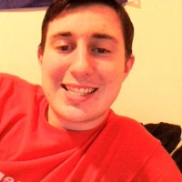

John is a proud Seattle native. He currently is working at Kohl's as an associate and aspires to be a game developer. He has a general associate’s degree and believes that perseverance and determination are key qualities a person needs in order to be successful. You'll probably find John streaming/making videos on his YouTube channel, working, or walking around parks playing Pokémon go, maybe even coding a simple RPG game through whatever means possible.